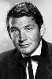

Country:United States, 85 minutes
Spoken languages:English, Italian
Genres:Sci-Fi, Action
Director(s):Byron Haskin
Writer(s):H.G. Wells, Barré Lyndon
Video Codec:Unknown
Number: 2319


Certification:
Storyline:
The residents of a small town are excited when a flaming meteor lands in the hills, until they discover it is the first of many transport devices from Mars bringing an army of invaders invincible to any man-made weapon, even the atomic bomb.
Cast: 
Medium: Original DVD,
Loaned: No
Aspect ratio: Unknown